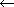

Copyright ©1995 by NeXT Computer, Inc. All Rights Reserved.
| 4 |
Assembler Directives
| This chapter describes assembler directives (also known as pseudo operations, or pseudo-ops), which allow control over the actions of the assembler. For organizational purposes, the directives are grouped here into the following functional categories: |
| Directives for designating the current section | ||
| Built-in directives for designating the current section | ||
| Directives for moving the location counter | ||
| Directives for generating data | ||
| Directives for dealing with symbols | ||
| Miscellaneous directives | ||
| Processor-specific directives |
| Directives for Designating the Current Section |
| The assembler in NEXTSTEP Release 3.3 and later supports designation of arbitrary sections with the .section and .zerofill directives (descriptions apear below). Only those sections specified by a directive in the assembly file appear in the resulting object file (including implicit .text directives--see "Built-in Directives for Designating the Current Section"). Sections appear in the object file in the order their directives first appear in the assembly file. When object files are linked by the link editor, the output objects have their sections in the order the sections first appear in the object files that are linked. See the ld(1) UNIX man page for more details.
Associated with each section in each segment is an implicit location counter which begins at zero and is incremented by 1 for each byte assembled into the section. There is no way to explicitly reference a particular location counter, but the directives described here can be used to "activate" the location counter for a section, making it the current location counter. As a result, the assembler begins assembling into the section associated with that location counter. Note: If the -n command line option isn't used, the (__TEXT,__text) section is used by default at the beginning of each file being assembled, just as if each file began with the .text directive.
.section SYNOPSIS: |
| .section segname , sectname [[[ , type ] , attribute ] , sizeof_stub ] |
| The .section directive causes the assembler to begin assembling into the section given by segname and sectname. A section created with this directive contains initialized data or instructions and is referred to as a content section. type and attribute may be specified as described below under "Section Types and Attributes." If type is symbol_stubs, then the sizeof_stub field must be given as the size in bytes of the symbol stubs contained in the section.
.zerofill SYNOPSIS: |
| .zerofill segname , sectname [ , symbolname , size [ , align_expression ]] |
| The .zerofill directive causes symbolname to be created as uninitialized data in the section given by segname and sectname, with a size in bytes given by size. A power of 2 between 0 and 15 may be given for align_expression to indicate what alignment should be forced on symbolname, which will then be placed on the next expression boundary having the given alignment. See the description of the .align built-in directive for more information.
Section Types and Attributes A content section has a type, which informs the link editor about special processing needed for the items in that section. The most common form of special processing is for sections containing literals (strings, constants, and so on) where only one copy of the literal is needed in the output file and the same literal can be used by all references in the input files. A section's attributes record supplemental information about the section that the link editor may use in processing that section. For example, the reloc_at_launch attribute indicates that a section should be relocated immediately when a program is launched. A section's type and attribute are recorded in a Mach-O file as the flags field in the section header, using constants defined in the header file mach-o/loader.h. The following paragraphs describe the various types and attributes by the names used to identify them in a .section directive. The name of the related constant is also given in parentheses following the identifier.
Type Identifiers regular (S_REGULAR) |
| A regular section may contain any kind of data and gets no special processing from the link editor. This is the default section type. Examples of regular sections include program instructions or initialized data. |
| cstring_literals (S_CSTRING_LITERALS) |
| A cstring_literals section contains null-terminated literal C language character strings. The link editor places only one copy of each literal into the output file's section and relocates references to different copies of the same literal to the one copy in the output file. There can be no relocation entries for a section of this type, and all references to literals in this section must be inside the address range for the specific literal being referenced. The last byte in a section of this type must be a null byte, and the strings can't contain null bytes in their bodies. An example of a cstring_literals section is one for the literal strings that appear in the body of an ANSI C function where the compiler chooses to make such strings read-only. |
| 4byte_literals (S_4BYTE_LITERALS) |
| A 4byte_literals section contains 4-byte literal constants. The link editor places only one copy of each literal into the output file's section and relocates references to different copies of the same literal to the one copy in the output file. There can be no relocation entries for a section of this type, and all references to literals in this section must be inside the address range for the specific literal being referenced. An example of a 4byte_literals section is one in which single-precision floating-point constants are stored for a RISC machine (these would normally be stored as immediates in CISC machine code). |
| 8byte_literals (S_8BYTE_LITERALS) |
| An 8byte_literals section contains 8-byte literal constants. The link editor places only one copy of each literal into the output file's section and relocates references to different copies of the same literal to the one copy in the output file. There can be no relocation entries for a section of this type, and all references to literals in this section must be inside the address range for the specific literal being referenced. An example of a 8byte_literals section is one in which double-precision floating-point constants are stored for a RISC machine (these would normally be stored as immediates in CISC machine code). |
| literal_pointers (S_LITERAL_POINTERS) |
| A literal_pointers section contains 4-byte pointers to literals in a literal section. The link editor places only one copy of a pointer into the output file's section for each pointer to a literal with the same contents. The link editor also relocates references to each literal pointer to the one copy in the output file. There must be exactly one relocation entry for each literal pointer in this section, and all references to literals in this section must be inside the address range for the specific literal being referenced. The relocation entries can be external relocation entries referring to undefined symbols if those symbols identify literals in another object file. An example of a literal_pointers section is one containing selector references generated by the Objective C compiler. |
| symbol_stubs (S_SYMBOL_STUBS) |
| A symbol_stubs section contains symbol stubs, which are sequences of machine instructions (all the same size) used for lazily binding undefined function calls at run time. If a call to an undefined function is made, the compiler outputs a call to a symbol stub instead, and tags the stub with an indirect symbol that indicates what symbol the stub is for. On transfer to a symbol stub, a program executes instructions that eventually reach the code for the indirect symbol associated with that stub. Here's a sample of assemly code based on a function func() containing only a call to the undefined function foo(): |
 .text
.text
 .align 4, 0x90
.align 4, 0x90
 _func:
_func:
 call _foo_stub
call _foo_stub
 ret
ret
 .symbol_stub #
.symbol_stub #
 _foo_stub: #
_foo_stub: #
 .indirect_symbol _foo #
.indirect_symbol _foo #
 ljmp _foo_lazy_ptr # the symbol stub
ljmp _foo_lazy_ptr # the symbol stub
 _foo_stub_1: #
_foo_stub_1: #
 pushl $_foo_lazy_ptr #
pushl $_foo_lazy_ptr #
 jmp dyld_stub_binding_helper #
jmp dyld_stub_binding_helper #
 .lazy_symbol_pointer #
.lazy_symbol_pointer #
 _foo_lazy_ptr: # the symbol pointer
_foo_lazy_ptr: # the symbol pointer
 .indirect_symbol _foo #
.indirect_symbol _foo #
 .long _foo_stub_1 # to be replaced by _foo's address
.long _foo_stub_1 # to be replaced by _foo's address
| In the assembly code, _func calls _foo_stub, which is responsible for finding the definition of the function foo(). _foo_stub jumps to the contents of _foo_lazy_ptr, initially causing the code at _foo_stub_1 to be executed. This value is initially the address for _foo_stub1, which calls the dyld_stub_binding_helper() function to overwrite the contents of _foo_lazy_ptr with the address of the real function, _foo. This way, jumps through _foo_lazy_ptr will immediately execute foo()'s code.
The indirect symbol entries for _foo provide information to the static and dynamic linkers for binding the symbol stub. Each symbol stub and lazy pointer entry must have exactly one such indirect symbol, associated with the first address in the stub or pointer entry. See the description of the .indirect_symbol directive for more information. The static link editor places only one copy of each stub into the output file's section for a particular indirect symbol, and relocates all references to the stubs with the same indirect symbol to the stub in the output file. Further, the static link editor eliminates a stub if a definition of the indirect symbol for that stub is present in the output file and that output file isn't a dynamically linked shared library file. The stub can refer only to itself, one lazy symbol pointer (referring to the same indirect symbol as the stub), and the dyld_stub_binding_helper() function. No global symbols can be defined in this type of section. |
| lazy_symbol_pointers (S_LAZY_SYMBOL_POINTERS) |
| A lazy_symbol_pointers section contains 4-byte symbol pointers that will eventually contain the value of the indirect symbol associated with the pointer. These pointers are used by symbol stubs to lazily bind undefined function calls at run time. A lazy symbol pointer initially contains an address in the symbol stub of instructions that cause the symbol pointer to be bound to the function definition (in the example above, the lazy pointer _foo_lazy_ptr initially contains the address for _foo_stub_1 but gets overwritten with the address for _foo). The dynamic link editor binds the indirect symbol associated with the lazy symbol pointer by overwriting it with the value of the symbol.
The static link editor only places a copy of a lazy pointer in the output file if the corresponding symbol stub is in the output file. Only the corresponding symbol stub can make a reference to a lazy symbol pointer, and no global symbols can be defined in this type of section. There must be one indirect symbol assocated with each lazy symbol pointer. An example of a lazy_symbol_pointers section is one in which the compiler has generated calls to undefined functions, each of which can be bound lazily at the time of the first call to the function. |
| non_lazy_symbol_pointers (S_NON_LAZY_SYMBOL_POINTERS) |
| A non_lazy_symbol_pointers section contains 4-byte symbol pointers that will contain the value of the indirect symbol associated with a pointer that may be set at any time before any code makes a reference to it. These pointers are used by the code to reference undefined symbols. Initially these pointers have no interesting value, but will get overwritten by the dynamic link editor with the value of the symbol for the associated indirect symbol before any code can make a reference to it.
The static link editor places only one copy of each non-lazy pointer for its indirect symbol into the output file and relocates all references to the pointer with the same indirect symbol to the pointer in the output file. The static link editor futher can fill in the pointer with the value of the symbol if a definition of the indirect symbol for that pointer is present in the output file. No global symbols can be defined in this type of section. There must be one indirect symbol assocated with each non-lazy symbol pointer. An example of a non_lazy_symbol_pointers section is one in which the compiler has generated code to indirectly reference undefined symbols to be bound at run time--this preserves the sharing of the machine instructions by allowing the dynamic link editor to update references without writing on the instructions. Here's an example of assembly code referencing an element in the undefined |
 struct s {
struct s {
 int member1, member2;
int member1, member2;
 };
};
 extern struct s bar;
extern struct s bar;
 int func()
int func()
 {
{
 return(bar.member2);
return(bar.member2);
 }
}
| The i386 assembly code might look like this: |
 .text
.text
 .align 4, 0x90
.align 4, 0x90
 .globl _func
.globl _func
 _func:
_func:
 movl _bar_non_lazy_ptr,%eax
movl _bar_non_lazy_ptr,%eax
 movl 4(%eax),%eax
movl 4(%eax),%eax
 ret
ret
 .non_lazy_symbol_pointer
.non_lazy_symbol_pointer
 _bar_non_lazy_ptr:
_bar_non_lazy_ptr:
 .indirect_symbol _bar
.indirect_symbol _bar
 .long 0
.long 0
| mod_init_funcs (S_MOD_INIT_FUNC_POINTERS) |
| A mod_init_funcs section contains 4-byte pointers to functions that are to be called just after the module containing the pointer is bound into the program by the dynamic link editor. The static link editor does no special processing for this section type except for disallowing section ordering. This is done to maintain the order the functions will be called (which is the order their pointers appear in the original module). There must be exactly one relocation entry for each pointer in this section. An example of a mod_init_funcs section is one in which the compiler has generated code to call C++ constructors for modules that get dynamicly bound at run time. |
| Attribute Identifiers
none (0) |
| No attributes for this section. This is the default section attribute. |
| pure_instructions (S_ATTR_PURE_INSTRUCTIONS) |
| The pure_instructions attribute means that this section contains nothing but machine instructions. This attribute would be used for the (__TEXT,__text) section of NeXT compilers and sections which have a section type of symbol_stubs. |
| reloc_at_launch (S_ATTR_RELOC_AT_LAUNCH) |
| The reloc_at_launch attribute means that this section is to be relocated by the dynamic linker when the program is first run or first loaded into memory, regardless of whether a module is needed to bind undefined symbols. Sections are normally relocated only when first referenced. This attribute would be used for the (__OBJC,__message_refs) section of NeXT Objective C compiler to allow the Objective C run-time system to initialize images being loaded into a program. |
| Built-in Directives for Designating the Current Section |
| The directives described here are simply built-in equivalents for .section directives with specific arguments.
Designating Sections in the __TEXT Segment The directives listed below cause the assembler to begin assembling into the indicated section of the __TEXT segment. Note that the underscore before __TEXT, __text, and the rest of the segment names is actually two underscore characters. |
| Directive | Section |
| .text | (__TEXT,__text) | |
| .const | (__TEXT,__const) | |
| .static_const | (__TEXT,__static_const) | |
| .cstring | (__TEXT,__cstring) | |
| .literal4 | (__TEXT,__literal4) | |
| .literal8 | (__TEXT,__literal8) | |
| .constructor | (__TEXT,__constructor) | |
| .destructor | (__TEXT,__destructor) | |
| .fvmlib_init0 | (__TEXT,__fvmlib_init0) | |
| .fvmlib_init1 | (__TEXT,__fvmlib_init1) | |
| .symbol_stub | (__TEXT,__symbol_stub) | |
| .mod_init_func | (__TEXT,__mod_init_func) |
| The following paragraphs describe the sections in the __TEXT segment and the types of information that should be assembled into each of them:
(__TEXT,__text) |
| The compiler only places machine instructions in the (__TEXT,__text) section (no read-only data, jump tables or anything else). With this the entire (__TEXT,__text) section is pure instructions and tools that operate on object files can take advantage of this and can locate the instructions of the program and not get confused with data that could have been mixed in. To make this work all run-time support code linked into the program must also obey this rule (all NeXT library code follows this rule). |
| (__TEXT,__const) This is equivalent to .section __TEXT,__const The compiler places all data declared const in this section and all jump tables it generates for switch statements. (__TEXT,__static_const) |
| This is not currently used by the compiler. It was added to the assembler so that the compiler may separate global and static const data into separate sections if it wished to. |
| (__TEXT,__cstring) This is equivalent to .section __TEXT,__cstring, cstring_literals |
| This section is marked with the section type S_LITERAL_CSTRING, which the link editor recognizes. The link editor merges the like literal C strings in all the input object files to one unique C string in the output file. Therefore this section must only contain C strings (a C string in a sequence of bytes that ends in a null byte, '\0', and does not contain any other null bytes except its terminator). The compiler places literal C strings found in the code that are not initializers and do not contain any imbedded nulls in this section. |
| (__TEXT,__literal4) This is equivalent to .section __TEXT,__literal4,4byte_literals |
| This section is marked with the section type S_4BYTE_LITERALS, which the link editor recognizes. The link editor then can merge the like 4 byte literals in all the input object files to one unique 4 byte literal in the output file. Therefore this section must only contain 4 byte literals. This is typically intended for single precision floating-point constants and the compiler uses this section for that purpose. On some machines it is more efficient to place these constants in line as immediates as part of the instruction (this is what is done on NeXT 68k machines when the optimizer is turned on). |
| (__TEXT,__literal8) This is equivalent to .section __TEXT,__literal8,8byte_literals |
| This section is marked with the section type S_8BYTE_LITERALS, which the link editor recognizes. The link editor then can merge the like 8 byte literals in all the input object files to one unique 8 byte literal in the output file. Therefore this section must only contain 8 byte literals. This is typically intended for double precision floating-point constants and the compiler uses this section for that purpose. On some machines it is more efficient to place these constants in line as immediates as part of the instruction (this is what is done on NeXT 68k machines when the optimizer is turned on). |
| (__TEXT,__constructor) This is equivalent to .section __TEXT,__constructor (__TEXT,__destructor) This is equivalent to .section __TEXT,__destructor |
| These sections are used by the C++ run-time system, and are reserved exclusively for the C++ compiler. |
| (__TEXT,__fvmlib_init0) This is equivalent to .section __TEXT,__fvmlib_init0 (__TEXT,__fvmlib_init1) This is equivalent to .section __TEXT,__fvmlib_init1 |
| These two sections are used by the fixed virtual memory shared library initialization. The compiler doesn't place anything in these sections, as they are reserved exclusively for the shared library mechanism. |
| (__TEXT,__symbol_stub) This is equivalent to .section __TEXT,__symbol_stub, symbol_stubs, pure_instructions,NBYTES |
| This section is of type symbol_stubs and has the attribute pure_instructions. The compiler places symbol stubs in this section for undefined functions that are called in the module. This is the standard symbol stub section for non position-independent code. The value NBYTES is dependent on the target architecture. The standard symbol stub for the m68k is 20 bytes and has an alignment of 2 bytes (.align 1 or .even) . For example, a stub for the symbol _foo would be (using a lazy symbol pointer Lfoo$stub_binder): |
 .symbol_stub
.symbol_stub
 Lfoo$stub:
Lfoo$stub:
 .indirect_symbol _foo
.indirect_symbol _foo
 movel L_foo$lazy_ptr,a0
movel L_foo$lazy_ptr,a0
 jmp a0@
jmp a0@
 Lfoo$stub_binder:
Lfoo$stub_binder:
 movel #L_foo$lazy_ptr,sp@-
movel #L_foo$lazy_ptr,sp@-
 bra dyld_stub_binding_helper
bra dyld_stub_binding_helper
 .lazy_symbol_pointer
.lazy_symbol_pointer
 L_foo$lazy_ptr:
L_foo$lazy_ptr:
 .indirect_symbol _foo
.indirect_symbol _foo
 .long Lfoo$stub_binder
.long Lfoo$stub_binder
| The standard symbol stub for the i386 is 16 bytes and has an alignment of 1 byte (.align 0). For example a stub for the symbol _foo would be (using a lazy symbol pointer Lfoo$stub_binder): |
 .symbol_stub
.symbol_stub
 Lfoo$stub:
Lfoo$stub:
 .indirect_symbol _foo
.indirect_symbol _foo
 ljmp L_foo$lazy_ptr
ljmp L_foo$lazy_ptr
 Lfoo$stub_binder:
Lfoo$stub_binder:
 pushl $L_foo$lazy_ptr
pushl $L_foo$lazy_ptr
 jmp dyld_stub_binding_helper
jmp dyld_stub_binding_helper
 .lazy_symbol_pointer
.lazy_symbol_pointer
 L_foo$lazy_ptr:
L_foo$lazy_ptr:
 .indirect_symbol _foo
.indirect_symbol _foo
 .long Lfoo$stub_binder
.long Lfoo$stub_binder
| (__TEXT, __picsymbol_stub) This is equivalent to .section __TEXT, __picsymbol_stub, symbol_stubs, pure_instructions, NBYTES |
| This section is of type symbol_stubs and has the attribute pure_instructions. The compiler places symbol stubs in this section for undefined functions that are called in the module. This is the standard symbol stub section for position-independent code. The value of NBYTES is dependent on the target architecture.
The standard position-independent symbol stub for the m68k is 24 bytes and has an alignment of 2 bytes (.align 1 or .even). For example a stub for the symbol _foo would be (using a lazy symbol pointer Lfoo$stub_binder): |
 .picsymbol_stub
.picsymbol_stub
 Lfoo$stub:
Lfoo$stub:
 .indirect_symbol _foo
.indirect_symbol _foo
 movel pc@(L_foo$lazy_ptr-.),a0
movel pc@(L_foo$lazy_ptr-.),a0
 jmp a0@
jmp a0@
 Lfoo$stub_binder:
Lfoo$stub_binder:
 pea pc@(L_foo$lazy_ptr-.)
pea pc@(L_foo$lazy_ptr-.)
 bra dyld_stub_binding_helper
bra dyld_stub_binding_helper
 .lazy_symbol_pointer
.lazy_symbol_pointer
 L_foo$lazy_ptr:
L_foo$lazy_ptr:
 .indirect_symbol _foo
.indirect_symbol _foo
 .long Lfoo$stub_binder
.long Lfoo$stub_binder
| The standard position-independent symbol stub for the i386 is 26 bytes and has an alignment of 1 byte (.align 0). For example a stub for the symbol _foo would be (using a lazy symbol pointer Lfoo$stub_binder): |
 .picsymbol_stub
.picsymbol_stub
 Lfoo$stub:
Lfoo$stub:
 .indirect_symbol _foo
.indirect_symbol _foo
 call L1foo$stub
call L1foo$stub
 L1foo$stub:
L1foo$stub:
 popl %eax
popl %eax
 movl L_foo$lazy_ptr-L1foo$stub(%eax),%ebx
movl L_foo$lazy_ptr-L1foo$stub(%eax),%ebx
 jmp %ebx
jmp %ebx
 Lfoo$stub_binder:
Lfoo$stub_binder:
 lea L_foo$lazy_ptr-L1foo$stub(%eax),%eax
lea L_foo$lazy_ptr-L1foo$stub(%eax),%eax
 pushl %eax
pushl %eax
 jmp dyld_stub_binding_helper
jmp dyld_stub_binding_helper
 .lazy_symbol_pointer
.lazy_symbol_pointer
 L_foo$lazy_ptr:
L_foo$lazy_ptr:
 .indirect_symbol _foo
.indirect_symbol _foo
 .long Lfoo$stub_binder
.long Lfoo$stub_binder
| (__TEXT,__mod_init_func) This is equivalent to .section __TEXT, __mod_init_func, mod_init_funcs |
| This section is of type mod_init_funcs and has no attributes. The C++ compiler places a pointer to a function in this section for each function it creates to call the constructors (if the module has them). |
| Designating Sections in the __DATA Segment
These directives cause the assembler to begin assembling into the indicated section of the __DATA segment: |
| Directive | Section |
| .data | (__DATA,__data) | |
| .static_data | (__DATA,__static_data) | |
| .non_lazy_symbol_pointer | (__DATA,__nl_symbol_pointer) | |
| .lazy_symbol_pointer | (__DATA,__la_symbol_pointer) | |
| .dyld | (__DATA,__dyld) |
| The following paragraphs describe the sections in the __DATA segment and the types of information that should be assembled into each of them:
(__DATA,__data) |
| The compiler places all non-const initialized data (even initialized to zero) in this section. |
| (__DATA,__static_data) This is equivalent to .section __DATA, __static_data |
| This is not currently used by the compiler. It was added to the assembler so that the compiler could separate global and static data symbol into separate sections if it wished to. |
| (__DATA,__nl_symbol_ptr) This is equivalent to .section __DATA, __nl_symbol_ptr,non_lazy_symbol_pointers |
| This section is of type non_lazy_symbol_pointers and has no attributes. The compiler places a non-lazy symbol pointer in this section for each undefined symbol referenced by the module (except for function calls). |
| (__DATA,__la_symbol_ptr) This is equivalent to .section __DATA, __la_symbol_ptr,lazy_symbol_pointers |
| This section is of type lazy_symbol_pointers and has no attributes. The compiler places a lazy symbol pointer in this section for each symbol stub it creates for undefined functions that are called in the module. (See __TEXT, __symbol_stub for examples.) |
| (__DATA,__dyld) This is equivalent to .section __DATA, __dyld,regular |
| This section is of type regular and has no attributes. This section is used by the dynamic link editor. The compiler doesn't place anything in this section, as it is reserved exclusively for the dynamic link editor. |
| Designating Sections in the __OBJC Segment
These directives cause the assembler to begin assembling into the indicated section of the __OBJC segment: |
| Directive | Section |
| .objc_class | (__OBJC,__class) | |
| .objc_meta_class | (__OBJC,__meta_class) | |
| .objc_cat_cls_meth | (__OBJC,__cat_cls_meth) | |
| .objc_cat_inst_meth | (__OBJC,__cat_inst_meth) | |
| .objc_protocol | (__OBJC,__protocol) | |
| .objc_string_object | (__OBJC,__string_object) | |
| .objc_cls_meth | (__OBJC,__cls_meth) | |
| .objc_inst_meth | (__OBJC,__inst_meth) | |
| .objc_cls_refs | (__OBJC,__cls_refs) | |
| .objc_message_refs | (__OBJC,__message_refs) | |
| .objc_symbols | (__OBJC,__symbols) | |
| .objc_category | (__OBJC,__category) | |
| .objc_class_vars | (__OBJC,__class_vars) | |
| .objc_instance_vars | (__OBJC,__instance_vars) | |
| .objc_module_info | (__OBJC,__module_info) | |
| .objc_class_names | (__OBJC,__class_names) | |
| .objc_meth_var_names | (__OBJC,__meth_var_names) | |
| .objc_meth_var_types | (__OBJC,__meth_var_types) | |
| .objc_selector_strs | (__OBJC,__selector_strs) |
| All sections in the __OBJC segment, including old sections that are no longer used and future sections that may be added, are exclusively reserved for the Objective C compiler's use. |
| Directives for Moving the Location Counter |
| This section describes directives that advance the location counter to a location higher in memory. They have the additional effect of setting the intervening memory to some value.
.align SYNOPSIS: |
| .align expression [ , fill_expression ] |
| The .align directive advances the location counter to the next expression boundary, if it isn't currently on such a boundary. expression is a power of 2 between 0 and 15 (not the result of the power of 2; for example, the argument of .align 3 means 2 to the third). The fill expression, if specified, must be absolute. The space between the current value of the location counter and the desired value is filled with the low-order byte of the fill expression (or with zeros, if fill_expression isn't specified).
Note: The assembler enforces no alignment for any bytes created in the object file (data or machine instructions). You must supply the desired alignment before any directive or instruction. EXAMPLE: |
 .align 3
.align 3
 one: .double 0r1.0
one: .double 0r1.0
| .org
SYNOPSIS: |
| .org expression [ , fill_expression ] |
| The .org directive sets the location counter to expression, which must be a currently known absolute expression. This directive can only move the location counter up in address. The fill expression, if specified, must be absolute. The space between the current value of the location counter and the desired value is filled with the low-order byte of the fill expression (or with zeros, if fill_expression isn't specified).
Note: If the output file is later link-edited, the .org directive isn't preserved. EXAMPLE: |
 .org 0x100,0xff
.org 0x100,0xff
| Directives for Generating Data |
| The directives described in this section all generate data (unless specified otherwise, the data goes into the current section). In some respects they are similar to the directives in the previous section, "Directives for Moving the Location Counter"--they do have the effect of moving the location counter--but this isn't their primary purpose.
.ascii and .asciz SYNOPSIS: |
| .ascii [ "string" ] [ , "string" | ] ... |
| .asciz [ "string" ] [ , "string" ] ... |
| These two directives translate character strings into their ASCII equivalents for use in the source program. Each directive takes zero or more comma-separated, quoted strings. Each string can contain any character or escape sequence that can appear in a character string; the newline character cannot appear, but it can be represented by the escape sequence \012 or \n. |
| The .ascii directive generates a sequence of ASCII characters. | ||
| The .asciz directive is similar, except that it automatically terminates the sequence of ASCII characters with the null character, \0 (necessary when generating strings usable by C programs). |
| If no strings are specified, the directive is ignored.
EXAMPLE: |
 .ascii "Can't open the DSP.\0"
.ascii "Can't open the DSP.\0"
 .asciz "%s has changes.\tSave them?"
.asciz "%s has changes.\tSave them?"
| .byte, .short, and .long
SYNOPSIS: |
| .byte [ expression ] [ , expression ] ... .short [ expression ] [ , expression ] ... .long [ expression ] [ , expression ] ... |
| These directives reserve storage locations in the current section and initialize them with specified values. Each directive takes zero or more comma-separated absolute expressions and generates a sequence of bytes for each expression. The expressions are truncated to the size generated by the directive: |
| .byte generates one byte per expression | ||
| .short generates two bytes per expression | ||
| .long generates four bytes per expression |
| EXAMPLE: |
 .byte 74,0112,0x4A,0x4a,'J | all the same byte
.byte 74,0112,0x4A,0x4a,'J | all the same byte
 .short 64206,0175316,0xface | all the same short
.short 64206,0175316,0xface | all the same short
 .long -1234,037777775456,0xfffffb2e | all the same long
.long -1234,037777775456,0xfffffb2e | all the same long
| .single and .double
SYNOPSIS: |
| .single [ number ] [ , number ] ... .double [ number ] [ , number ] ... |
| These two directives reserve storage locations in the current section and initialize them with specified values. Each directive takes zero or more comma-separated decimal floating-point numbers: |
| .single takes IEEE single-precision floating point numbers; it reserves four bytes for each number, and initializes them to the value of the corresponding number | ||
| .double takes IEEE double-precision floating point numbers; it reserves eight bytes for each number, and initializes them to the value of the corresponding number |
| EXAMPLE: |
 .single 3.33333333333333310000e-01
.single 3.33333333333333310000e-01
 .double 0.00000000000000000000e+00
.double 0.00000000000000000000e+00
 .single +Infinity
.single +Infinity
 .double -Infinity
.double -Infinity
 .single NaN
.single NaN
| .fill
SYNOPSIS: |
| .fill repeat_expression , fill_size , fill_expression |
| The .fill directive advances the location counter by repeat_expression times fill_size bytes. |
| fill_size is in bytes, and must have the value 1, 2, or 4 |
| repeat_expression must be an absolute expression greater than zero | ||
| fill_expression may be any absolute expression (it gets truncated to the fill size) |
| EXAMPLE: |
 .fill 69,4,0xfeadface | put out 69 0xfeadface's
.fill 69,4,0xfeadface | put out 69 0xfeadface's
| .space
SYNOPSIS: |
| .space num_bytes [ , fill_expression ] |
| The .space directive advances the location counter by num_bytes, where num_bytes is an absolute expression greater than zero. The fill expression, if specified, must be absolute. The space between the current value of the location counter and the desired value is filled with the low-order byte of the fill expression (or with zeros, if fill_expression isn't specified).
EXAMPLE: |
 ten_ones:
ten_ones:
 .space 10,1
.space 10,1
| .comm
SYNOPSIS: |
| .comm nameá, size |
| The .comm directive creates a common symbol named name of size bytes. If the symbol isn't defined elsewhere, its type is "common."
The link editor allocates storage for common symbols that aren't otherwise defined. Enough space is left after the symbol to hold the maximum size (in bytes) seen for each symbol in the (__DATA,__common) section. The link editor will align each such symbol (based on its size aligned to the next greater power of two) to the maximum alignment of the (__DATA,__common) section. For information about how to change the maximum alignment, see the description of -sectalign in the ld(1) UNIX manual page. EXAMPLE: |
 .comm _global_uninitialized,4
.comm _global_uninitialized,4
| .lcomm
SYNOPSIS: |
| .lcomm nameá, size [ , align ] |
| The .lcomm directive creates a symbol named name of size bytes in the (__DATA,__bss) section. It will contain zeros at execution. The name isn't declared as global, and hence will be unknown outside the object module.
The optional align expression, if specified, causes the location counter to be rounded up to an align power-of-two boundary before assigning the location counter to the value of name. EXAMPLE: |
 .lcomm abyte,1 | or: .lcomm abyte,1,0
.lcomm abyte,1 | or: .lcomm abyte,1,0
 .lcomm padding,7
.lcomm padding,7
 .lcomm adouble,8 | or: .lcomm adouble,8,3
.lcomm adouble,8 | or: .lcomm adouble,8,3
| These are the same as: |
 .zerofill __DATA,__bss,abyte,1
.zerofill __DATA,__bss,abyte,1
 .lcomm __DATA,__bss,padding,7
.lcomm __DATA,__bss,padding,7
 .lcomm __DATA,__bss,adouble,8
.lcomm __DATA,__bss,adouble,8
| Directives for Dealing with Symbols |
| This section describes directives that have an effect on symbols and the symbol table.
.globl SYNOPSIS: |
| .globl symbol_name |
| The .globl directive makes symbol_name external. If symbol_name is otherwise defined (by .set or by appearance as a label), it acts within the assembly exactly as if the .globl statement were not given; however, the link editor may be used to combine this object module with other modules referring to this symbol.
EXAMPLE: |
 .globl abs
.globl abs
 .set abs,1
.set abs,1
 .globl var
.globl var
 var: .long 2
var: .long 2
| .indirect_symbol
SYNOPSIS: .indirect_symbol symbol_name The .indirect_symbol directive creates an indirect symbol with symbol_name and associates the current location with the indirect symbol. An indirect symbol must be defined immediately before each item in a symbol_stub, lazy_symbol_pointers, and non_lazy_symbol_pointers section. The static and dynamic linkers use symbol_name to identify the symbol associated with the following item.
.reference SYNOPSIS: |
| .reference symbol_name |
| The .reference directive causes symbol_name to be an undefined symbol that will be present in the output's symbol table. This is useful in referencing a symbol without generating any bytes to do it (used, for example, by the Objective C run-time system to reference superclass objects).
EXAMPLE: |
 .reference .objc_class_name_Object
.reference .objc_class_name_Object
| .private_extern
SYNOPSIS: .private_extern symbol_name The .private_extern directive makes symbol_name a private external symbol. When the link editor combines this module with other modules (and the -keep_private_externs command-line option is not specified) the symbol turns it from global to static.
.lazy_reference SYNOPSIS: |
| .lazy_reference symbol_name |
| The .reference directive causes symbol_name to be a lazy undefined symbol that will be present in the output's symbol table. This is useful in referencing a symbol without generating any bytes to do it (used, for example, by the Objective C run-time system with the dynamic linker to reference superclass objects but to allow the runtime to bind them on first use).
EXAMPLE: |
 .lazy_reference .objc_class_name_Object
.lazy_reference .objc_class_name_Object
| .stabs, .stabn, and .stabd
SYNOPSIS: |
| .stabs n_name , n_type , n_other , n_desc , n_value .stabn n_type , n_other , n_desc , n_value .stabd n_type , n_other , n_desc |
| These three directives are used to place symbols in the symbol table for the symbolic debugger (a "stab" is a symbol table entry). |
| .stabs specifies all the fields in a symbol table entry. The n_name is the name of a symbol; if the symbol name is null, the .stabn directive may be used instead. | ||
| .stabn is like .stabs, except that it uses a NULL ("") name. | ||
| .stabd is like .stabn, except that it uses the value of the location counter ( . ) as the n_value field. |
| In each case, the n_type field is assumed to contain a 4.3BSD-like value for the N_TYPE bits. For .stabs and .stabn the n_sect field of the Mach-O file's nlist is set to the section number of the symbol for the specified n_value parameter. For .stabd the n_sect field is set to the current section number for the location counter. The nlist structure is defined in mach-o/nlist.h.
Note: The n_other field of a stab directive is ignored. EXAMPLE: |
 .stabs "hello.c",100,0,0,Ltext
.stabs "hello.c",100,0,0,Ltext
 .stabn 192,0,0,LBB2
.stabn 192,0,0,LBB2
 .stabd 68,0,15
.stabd 68,0,15
| .desc
SYNOPSIS: |
| .desc symbol_name , absolute_expression |
| The .desc directive sets the n_desc field of the specified symbol to absolute_expression.
EXAMPLE: |
 .desc _main,0xface
.desc _main,0xface
| .set
SYNOPSIS: |
| .set symbol_name , absolute_expression |
| The .set directive creates the symbol symbol_name and sets its value to absolute_expression. This is the same as using symbol_name = absolute_expression.
EXAMPLE: |
 .set one,1
.set one,1
 two = 2
two = 2
| .lsym
SYNOPSIS: |
| .lsym symbol_name , expression |
| A unique and otherwise unreferenceable symbol of the (symbol_name, expression) pair is created in the symbol table. Some Fortran 77 compilers use this mechanism to communicate with the debugger. |
| Miscellaneous Directives |
| This section describes additional directives that don't fit into any of the previous sections.
.abort SYNOPSIS: |
| .abort [ "abort_string" ] |
| The .abort directive causes the assembler to ignore all further input and quit processing. No files are created. The directive would be used, for example, in a pipe interconnected version of a compiler--the first major syntax error would cause the compiler to issue this directive, saving unnecessary work in assembling code that would have to be discarded anyway.
The optional "abort_string" is printed as part of the error message when the .abort directive is encountered. EXAMPLE: |
 #ifndef VAR
#ifndef VAR
 .abort "You must define VAR to assemble this file."
.abort "You must define VAR to assemble this file."
 #endif
#endif
| .file and .line
SYNOPSIS: |
| .file file_name .line line_number |
| The .file directive causes the assembler to report error messages as if it were processing the file file_name.
The .line directive causes the assembler to report error messages as if it were processing the line line_number. The next line after the .line directive is assumed to be line_number. The assembler turns C preprocessor comments of the form |
 # line_number file_name level
# line_number file_name level
| into |
 .line line_number; .file file_name
.line line_number; .file file_name
| EXAMPLE: |
 .line 6
.line 6
 nop | this is line 6
nop | this is line 6
| .if, .elseif, .else, and .endif
SYNOPSIS: |
| .if expression .elseif expression .else .endif |
| These directives are used to delimit blocks of code that are to be assembled conditionally, depending on the value of an expression. A block of conditional code may be nested within another block of conditional code. Expression must be an absolute expression.
For each .if directive, |
| there must be a matching .endif | ||
| there may be as many intervening .elseif's as desired | ||
| there may be no more than one intervening .else before the tailing .endif |
| Labels or multiple statements must not be placed on the same line as any of these directives; otherwise, statements including these directives won't be recognized and will produce errors or incorrect conditional assembly.
EXAMPLE: |
 .if a==1
.if a==1
 .long 1
.long 1
 .elseif a==2
.elseif a==2
 .long 2
.long 2
 .else
.else
 .long 3
.long 3
 .endif
.endif
| .include
SYNOPSIS: |
| .include filename |
| The .include directive causes the named file to be included at the current point in the assembly. The -Idir option to the assembler specifies alternative paths to be used in searching for the file if it isn't found in the current directory (the default path, /usr/include, is always searched last).
EXAMPLE: |
 .include macros.h
.include macros.h
| .macro, .endmacro, .macros_on, and .macros_off
SYNOPSIS: |
| .macro .endmacro .macros_on .macros_off |
| These directives allow your to define simple macros (once a macro is defined, however, you can't redefine it). For example: |
 .macro var
.macro var
 instruction_1 $0,$1
instruction_1 $0,$1
 instruction_2 $2
instruction_2 $2
 . . .
. . .
 instruction_N
instruction_N
 .long $n
.long $n
 .endmacro
.endmacro
| $d (where d is a single decimal digit, 0 through 9) represents each argument--there can be at most 10 arguments. $n is replaced by the actual number of arguments the macro was invoked with.
When you use a macro, arguments are separated by a comma (except inside matching parentheses--for example, xxx(1,3,4),yyy contains only two arguments). You could use the macro defined above as follows: |
 var #0,@sp,4
var #0,@sp,4
| This would be expanded to: |
 instruction_1 #0,@sp
instruction_1 #0,@sp
 instruction_2 4
instruction_2 4
 . . .
. . .
 instruction_N
instruction_N
 .long 3
.long 3
| The directives .macros_on and .macros_off allow macros to be written that override an instruction or directive while still using the instruction or directive. For example: |
 .macro .long
.macro .long
 .macros_off
.macros_off
 .long $0,$0
.long $0,$0
 .macros_on
.macros_on
 .endmacro
.endmacro
| If you don't specify an argument, the macro will substitute nothing (also see the .abs directive below).
.abs SYNOPSIS: |
| .abs symbol_name , expression |
| This directive sets the value of symbol_name to 1 if expression is an absolute expression; otherwise, it sets the value to 0.
EXAMPLE: |
 .macro var
.macro var
 .abs is_abs,$0
.abs is_abs,$0
 .if is_abs==1
.if is_abs==1
 .abort "must be absolute"
.abort "must be absolute"
 .endif
.endif
 .endmacro
.endmacro
| .dump and .load
SYNOPSIS: |
| .dump filename .load filename |
| These directives let you dump and load the absolute symbols and macro definitions, for faster loading and faster assembly.
These work like this: |
 .include "big_file_1"
.include "big_file_1"
 .include "big_file_2"
.include "big_file_2"
 .include "big_file_3"
.include "big_file_3"
 . . .
. . .
 .include "big_file_N"
.include "big_file_N"
 .dump "symbols.dump"
.dump "symbols.dump"
| The .dump directive writes out all the N_ABS symbols and macros. You can later use the .load directive to load all the N_ABS symbols and macros faster than you could with .include: |
 .load "symbols.dump"
.load "symbols.dump"
| One useful side effect of loading symbols this way is that they aren't written out to the object file. |
| Architecture- and Processor-specific Directives |
| M68000-Specific Directives
The following directives are specific to the M68000 architecture.
.word, .long, .quad, and .octa SYNOPSIS: |
| .word [ expression ] [ , expression ] ... .int [ expression ] [ , expression ] ... .quad [ expression ] [ , expression ] ... .octa [ expression ] [ , expression ] ... |
| These directives reserve storage locations in the current section and initialize them with specified integral values. Each directive takes zero or more comma-separated absolute expressions and generates a sequence of bytes for each expression. The expressions are truncated to the size generated by the directive: |
| .word generates two bytes per expression | ||
| .int generates four bytes per expression | ||
| .quad generates eight bytes per expression | ||
| .octa generates sixteen bytes per expression |
| Additional Processor-Specific Directives |
| The following processor-specific directives are synonyms for other standard directives described earlier in this chapter; although they are listed here for completeness, their use isn't recommended; wherever possible, you should use the standard directive instead.
The following are M68000-specific directives: |
| M68000 Directive | Standard Directive |
| .skip | .space | |
| .float | .single | |
| .even | .align 1 | |
| .proc | <<reserved for future use>> |
| The following are i386-specific directives: |
| i386 Directive | Standard Directive |
| .ffloat | .single | |
| .dfloat | .double | |
| .tfloat | [expression]  80-bit IEEE extended precision floating-point | |
| .word | .short | |
| .value | .short | |
| .ident | (ignored) | |
| .def | (ignored) | |
| .optim | (ignored) | |
| .version | (ignored) | |
| .ln | (ignored) |